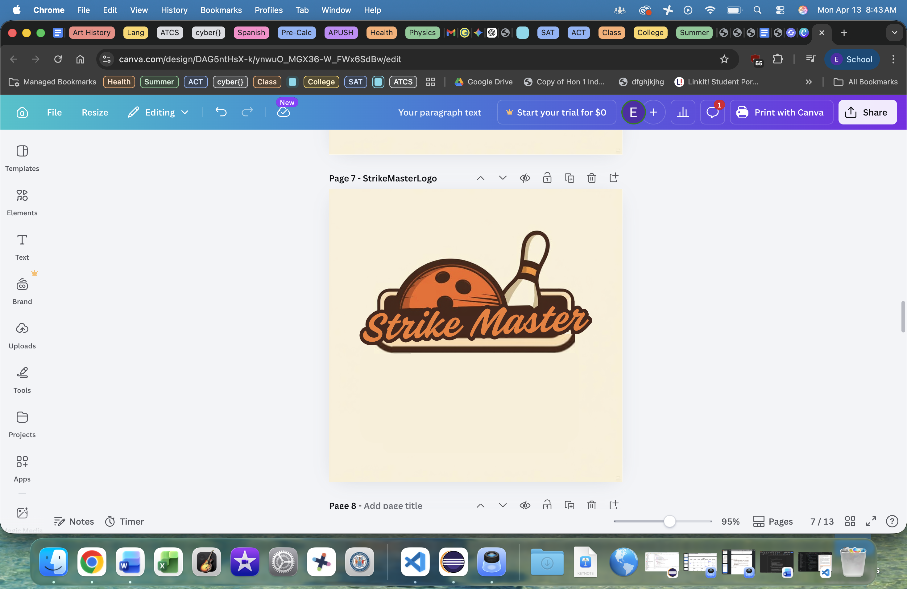
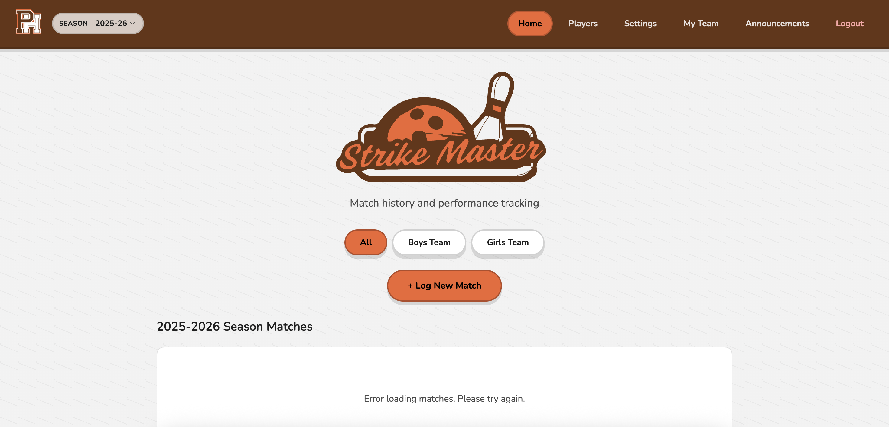

ATCS Project
Earlier this year, our class was asked to design a website that could make the entire bowling experience more managable for coaches and players, and this was when StrikeMaster was born. StrikeMaster helps bowlers and coaches track their stats, analyze their performance, and improve their game. It features a user-friendly interface where bowlers can log their scores, view detailed analytics, and see county rankings. Coaches can use the platform to monitor their players' progress, identify areas for improvement, and work to create customized training plans. With StrikeMaster, we aimed to revolutionize the way bowlers and coaches approach the sport, making it more accessible and simpler for everyone involved.
My role in the design process was to help create the front-end of the website, meaning I worked on what you see when you visit the site. Besides coming up with the name of the site (since I took inspiration from baseball’s version of our project called GameChanger, I wanted to include a reference to baseball, so StrikeMaster was perfect for both baseball and bowling), I created various designs for potential logos, kept a log of what our team as a whole had to accomplish, and I even learned a bit about front-end coding to help suggest or create some of the features on the site. Overall, I am really proud of the work that our team did on this project, and I think we created a really cool website that can help bowlers and coaches improve their game. If you want to check it out, click the link below! Link
